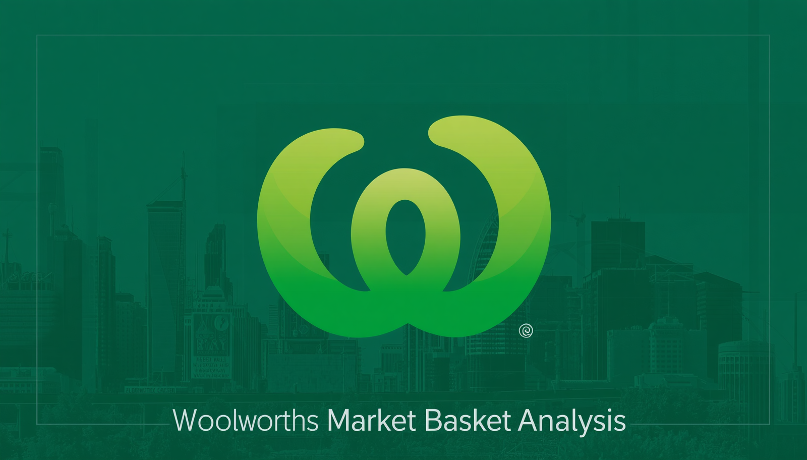
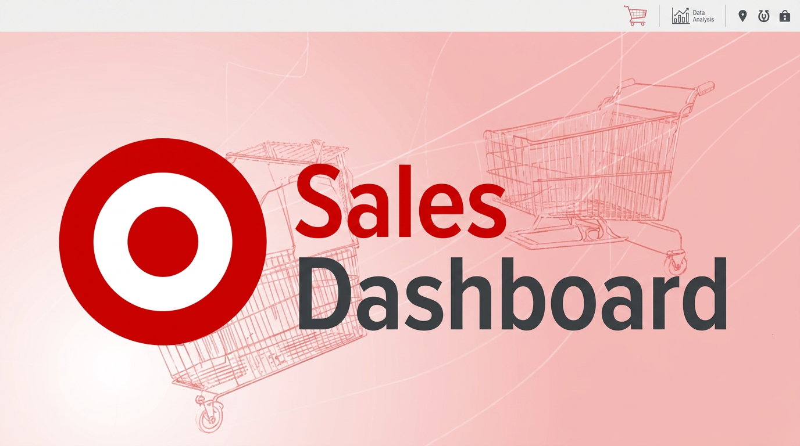
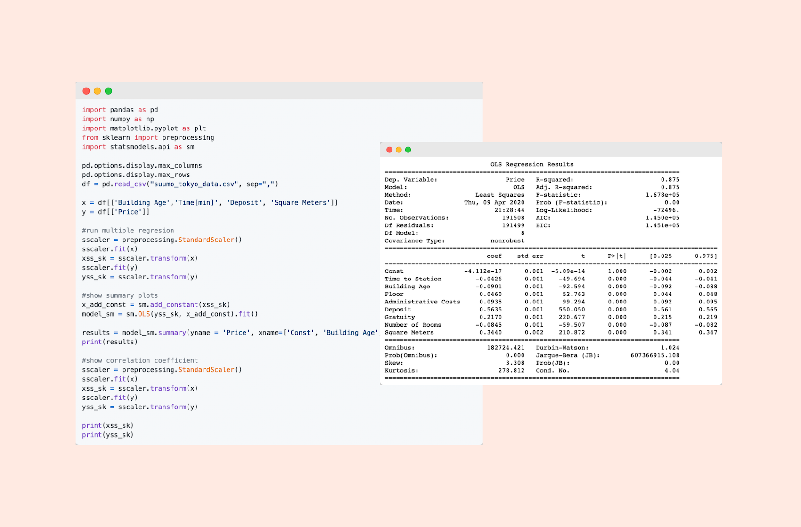

PROJECTS
Featured Work

Woolworths – Market Basket Analysis
Excel · Pivot Tables · Correlation Analysis

Target – Sales Performance Dashboard
Excel · Pivot Tables · Slicers · KPI Cards

Student Support Chatbot – BA Project
BRD · UML · User Stories

Auto-Update Controller – Bosch
C++ · AUTOSAR · Unit Testing